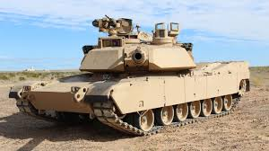

Man Used Chariots, Stirrups, Animals, Railways, and Other Seemingly Harmless Things to Improve Killing Techniques
all eras, war has been a complex and costly undertaking. The outcome and features of the confrontation of organized groups of armed people to resolve the issue of power, territory and resources have always depended on what means and skills they possessed. Therefore, the development of technology, as well as the level of social organization and knowledge about the world around us, has always gone side by side with the war and directly influenced its appearance.
Tanks
U.S. main battle tank, mass-produced since 1980. It is in service with the US Army and Marine Corps, as well as the armed forces of Egypt, Australia, Poland, Morocco and a number of Middle Eastern states. Named after General Creighton Abrams. M1 "Abrams" is currently one of the heaviest tanks, its combat weight exceeded 62 tons. It laid the foundation for the use of a number of innovative solutions, including a computer fire control system and separate storage of ammunition using ejection panels.
The development of the new tank, which later received the designation XM-1, began immediately after the XM802 program was closed at the end of 1971. To reduce technological risks, it was decided to design a new tank according to the classical scheme with a crew of 4 and with a high ballistics gun as the main armament. The 105 mm M68 rifled gun, the British 110 mm rifled gun and the German 120 mm smoothbore gun were considered for the role of the latter. The variant with the 110 mm cannon was immediately rejected as having no significant advantage over the 105 mm. The option with a 120 mm cannon was considered risky, so it was decided to leave the 105 mm M68 cannon with the possibility of subsequent replacement with a 120 mm one. The American air-cooled diesel AVCR-1100 (planned for the MBT-70), the German water-cooled diesel DB1500 (later designated MB873) and the American gas turbine engine (GTE) AGT-1500 were considered as the power plant. The power of all engines was 1500 liters. With. Initially, the military preferred diesel, but in the late 1970s, their sympathies shifted towards gas turbine engines.According to the original terms of reference, the armor protection of the tank was supposed to withstand (in the forward sector of fire ± 30 °) the 115-mm armor-piercing feathered sub-caliber projectile of the Soviet U-5TS cannon from a distance of 800 m. The planned price of the tank was supposed to be within 400 thousand dollars per 1972 prices, and the combat weight is 45 tons. It soon became clear that with these restrictions it was not possible to provide the required level of protection, so the performance limit was increased to 500 thousand dollars and 55 tons, respectively.
During the prototyping stage, both companies were guided by the following main requirements:
maximum combat weight 18 t
maximum machine width of 3.96 m to meet the requirements of European rail transport, i.e. the width of the railway platform
significant improvement in all areas compared to the M60
ground forces standards in terms of operational reliability, readiness and service life must be observed
the maximum cost of the tank is 107 thousand dollars
Within these limits, the two companies could implement their own ideas about protection, mobility and transportability to meet the set requirements.
According to the chairman of the OKNSh, Admiral Thomas Moorer, preliminary projects for consideration by the US Army Armored Directorate on May 8, 1973 were presented by the corporations General Motors, Chrysler and Ford [10]. FMC Corporation took a detour and offered a licensed copy of the American-made Leopard-2 tank
On June 28 of the same year, a contract was signed with ROC contractors to build prototypes for joint testing [12]. In early July 1976, representatives of General Motors and Chrysler visited England to get acquainted with the development of Chobham composite armor. As a result of the visit, both firms made changes to their designs in order to adapt the new armor. Another significant change in the design was the result of experience gained during the 1973 Arab-Israeli war. It was decided to abandon the 25-mm twin automatic gun M242 Bushmaster in favor of a 7.62-mm machine gun, and use the freed volume to increase the ammunition load of the main gun.
 The development of the new tank, which later received the designation XM-1, began immediately after the XM802 program was closed at the end of 1971. To reduce technological risks, it was decided to design a new tank according to the classical scheme with a crew of 4 and with a high ballistics gun as the main armament. The 105 mm M68 rifled gun, the British 110 mm rifled gun and the German 120 mm smoothbore gun were considered for the role of the latter. The variant with the 110 mm cannon was immediately rejected as having no significant advantage over the 105 mm. The option with a 120 mm cannon was considered risky, so it was decided to leave the 105 mm M68 cannon with the possibility of subsequent replacement with a 120 mm one. The American air-cooled diesel AVCR-1100 (planned for the MBT-70), the German water-cooled diesel DB1500 (later designated MB873) and the American gas turbine engine (GTE) AGT-1500 were considered as the power plant. The power of all engines was 1500 liters. With. Initially, the military preferred diesel, but in the late 1970s, their sympathies shifted towards gas turbine engines.According to the original terms of reference, the armor protection of the tank was supposed to withstand (in the forward sector of fire ± 30 °) the 115-mm armor-piercing feathered sub-caliber projectile of the Soviet U-5TS cannon from a distance of 800 m. The planned price of the tank was supposed to be within 400 thousand dollars per 1972 prices, and the combat weight is 45 tons. It soon became clear that with these restrictions it was not possible to provide the required level of protection, so the performance limit was increased to 500 thousand dollars and 55 tons, respectively.
The development of the new tank, which later received the designation XM-1, began immediately after the XM802 program was closed at the end of 1971. To reduce technological risks, it was decided to design a new tank according to the classical scheme with a crew of 4 and with a high ballistics gun as the main armament. The 105 mm M68 rifled gun, the British 110 mm rifled gun and the German 120 mm smoothbore gun were considered for the role of the latter. The variant with the 110 mm cannon was immediately rejected as having no significant advantage over the 105 mm. The option with a 120 mm cannon was considered risky, so it was decided to leave the 105 mm M68 cannon with the possibility of subsequent replacement with a 120 mm one. The American air-cooled diesel AVCR-1100 (planned for the MBT-70), the German water-cooled diesel DB1500 (later designated MB873) and the American gas turbine engine (GTE) AGT-1500 were considered as the power plant. The power of all engines was 1500 liters. With. Initially, the military preferred diesel, but in the late 1970s, their sympathies shifted towards gas turbine engines.According to the original terms of reference, the armor protection of the tank was supposed to withstand (in the forward sector of fire ± 30 °) the 115-mm armor-piercing feathered sub-caliber projectile of the Soviet U-5TS cannon from a distance of 800 m. The planned price of the tank was supposed to be within 400 thousand dollars per 1972 prices, and the combat weight is 45 tons. It soon became clear that with these restrictions it was not possible to provide the required level of protection, so the performance limit was increased to 500 thousand dollars and 55 tons, respectively.